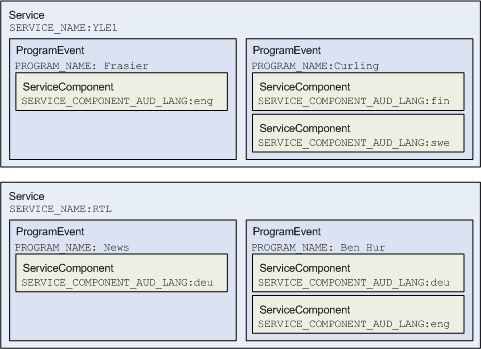

javax.microedition.broadcast.esg.ServiceGuide
javax.microedition.broadcast.esg.ServiceGuide
|
Copyright 2008 Motorola Inc. and Nokia Corporation. All Rights Reserved. Specification License |
||||||||
| PREV CLASS NEXT CLASS | FRAMES NO FRAMES | ||||||||
| SUMMARY: NESTED | FIELD | CONSTR | METHOD | DETAIL: FIELD | CONSTR | METHOD | ||||||||
java.lang.Object
public class ServiceGuide
The ServiceGuide class allows applications to query
information on the Electronic Service Guide (ESG).
Service
interface abstracts a service, or broadcast channel.
ProgramEvent
is the abstraction of a program
event -- a basic unit of broadcast programming.
The
ServiceComponent
interface describes the media components within a program event.
Attributes and values describing a
service, program and a component can be retrieved from these interfaces.
Attributes applicable to a broadcast specification are defined as
MetadataSet classes.
CommonMetadataSet
defines the basic attributes that are common to most broadcast specifications.
Other specifications can extend from this class to add custom attributes.
Attributes are "typed"; i.e., it specifies the type of values associated with each attribute.
ServiceGuide
provides a single access point to
query for services and program events. Queries are composed of attributes, values
and some logical operations on them.
QueryComposer
serves as the "factory" to compose these queries.
Applications can use
findPrograms(javax.microedition.broadcast.esg.Query) and
findServices(javax.microedition.broadcast.esg.Query)
to search for Services and ProgramEvents.
findPrograms and
findServices will search for
the program and service information that are currently available
in the database.
The result is a list of
ProgramEvent or
Service
objects matching the search queries.
ServiceGuide is considered to be valid when the underlying data storage it is accessing
is in place. isValid() can be used to check the validness any time. When ServiceGuide turns from
valid to not valid ServiceGuideListener.SERVICE_GUIDE_DELETED event is posted to listeners.
After that ServiceGuide removes all listeners from itself, and isValid() returns false
and all the other non-static methods throw IllegalStateException when called.
Query rules
Rules to create valid queries to query ProgramEvents and Services from ServiceGuide are as follows:
QueryException when used
with the service guide.
Query q1 = equivalent(CommonMetadata.PROGRAM_CONTENT_GENRE, "something");
will not match a program if that program does not specify any genre at all.
Query q2 = not(q1);
will not match a program if that program does not specify any genre.
findServices(Query) and
findServices(Query, Attribute[], int, int )
take attributes defined in the MetadataSets supported by the ServiceGuide. Attributes producing a match in the query can be queried from the returned services.
findPrograms(Query)
and
findPrograms(Query, Attribute[], int, int)
take attributes defined in the MetadataSets supported by the ServiceGuide. Attributes producing a match in the query can be queried from the returned programs.
Sorting the results
Methods findPrograms(Query, Attribute[], int, int) and
findServices(Query, Attribute[], int, int )
allow the results to be sorted. Attributes to be used in sorting are given in an array of Attributes.
If more than one attributes are specified, the first attribute
will be used as the primary sorting key, second attribute as
the secondary sorting key; and so on.
The sorting order is always in numeric or lexical ascending order.
For boolean attributes, a false value will be
sorted before a true value. Sorting order of ObjectAttributes
is unspecified.
If value for the given attribute for a particular program is
unspecified, the program will be sorted last.
If the given attribute maps multiple values, the default value
as returned from
ServiceGuideData.getStringValue()
will be used as the value to be sort.
Any attribute that is applicable in the query is applicable as a sorting attribute as well.
Below is an image showing a fragment of ServiceGuide data.

Here are some sample queries to show queries and sorting works. For simplicity the possible exceptions are not caught.
ServiceGuide guide = ServiceGuide.getDefaultServiceGuide();
Query q1 = QueryComposer.equivalent(CommonMetadataSet.SERVICE_COMPONENT_AUD_LANG, "fin");
Service[] finnishServices = guide.findServices(q1); // returns service YLE1
Query q2 = QueryComposer.equivalent(CommonMetadataSet.SERVICE_COMPONENT_AUD_LANG, "eng");
Service[] englishServices = guide.findServices(q2); // returns YLE1 and RTL
Query q3 = QueryComposer.equivalent(CommonMetadataSet.SERVICE_COMPONENT_AUD_LANG, "deu");
Qyery q4 = QueryComposer.or(q2, q3); // "eng" OR "deu"
// this returns programs "News", "Frasier" and "Ben Hur" but the order can be anything
ProgramEvent[] englishOrDeutchPrograms = guide.findPrograms(q4);
// this returns the same programs ordered by name: "Ben Hur", "Frasier", "News"
Attribute[] sortArray = {CommonMetadataSet.PROGRAM_NAME};
englishOrDeutchPrograms = guide.findPrograms(q4, sortArray, 0, 100);
// sorting first by service and then by program returns "Ben Hur", "News" and "Frasier" as "RTL" comes before "YLE1"
sortArray = {CommonMetadataSet.SERVICE_NAME, CommonMetadataSet.PROGRAM_NAME};
englishOrDeutchPrograms = guide.findPrograms(q4, sortArray, 0, 100);
ServiceGuideListener.
This can be done by setting a
ServiceGuideListener via the
addListener(javax.microedition.broadcast.esg.ServiceGuideListener, javax.microedition.broadcast.esg.Query) method. All listeners will be automatically removed when the ServiceGuide
becomes invalid.
It's possible to query which underlying bearer or ESG
(Electronic Service Guide) specification(s) is used for the
implementation by querying
for the Metadata spec via
getSupportedMetadataSets().
| Method Summary | |
|---|---|
void |
addListener(ServiceGuideListener listener,
Query filter)
Add a ServiceGuideListener to listen for any
updates to the programs. |
ProgramEvent[] |
findPrograms(Query query)
Search for the list of program events with the matching criteria based on the given query. |
ProgramEvent[] |
findPrograms(Query query,
Attribute[] sortBy,
int startOffset,
int length)
Search for the list of program events with the matching criteria based on the given query. |
Service[] |
findServices(Query query)
Search for the list of services with the matching criteria based on the given query. |
Service[] |
findServices(Query query,
Attribute[] sortBy,
int startOffset,
int length)
Search for the list of services with the matching criteria based on the given query. |
boolean |
forceUpdate()
Forces an ESG update. |
static ServiceGuide[] |
getAllServiceGuides()
List all the ServiceGuide available
by the currently selected PlatformProvider. |
java.lang.Object[] |
getAllUniqueValues(Attribute attribute)
Get the list of unique values for the given attribute. |
static ServiceGuide |
getDefaultServiceGuide()
Get the default ServiceGuide supported
by the currently selected PlatformProvider. |
java.util.Date |
getLastUpdatedTime()
Get the time when the service guide that the database contains is last updated. |
java.lang.String |
getServiceProvider()
Get the name of the service guide provider. |
MetadataSet[] |
getSupportedMetadataSets()
Get the list of MetadataSet specs supported by
the database implementation. |
boolean |
isValid()
Tells if the ServiceGuide is valid. |
void |
removeListener(ServiceGuideListener listener)
Remove a ServiceGuideListener. |
| Methods inherited from class java.lang.Object |
|---|
clone, equals, finalize, getClass, hashCode, notify, notifyAll, toString, wait, wait, wait |
| Method Detail |
|---|
public void addListener(ServiceGuideListener listener,
Query filter)
throws QueryException
ServiceGuideListener to listen for any
updates to the programs.
listener - The ServiceGuideListener to be used.
If null is given the method is silently ignored.
If the given listener is already added the method is ignored as well unless the filter
is different in which case the used filter will be updated to filter.filter - A filter specified as a database query to filter all
programs that are of interest to the applications. The application
will only receive updates to the programs that matches the
criteria specified by the filter. If null, no
filter is specified and all programs will get through.
If a listener is added for a
second time but with a different filter argument,
the previous filter will be ignored and the new filter will be
used for that listener.
Filtering can only block
NEW_PROGRAM_LISTED,
PROGRAM_CHANGED and
PROGRAM_DELETED events.
Other events specified in ServiceGuideListener will not be blocked by any filtering.
java.lang.IllegalStateException - Thrown if a new PlatformProvider
has been selected and the current ServiceGuide is no longer valid.
See PlatformProviderSelector.select(PlatformProvider).
QueryException - Thrown if the given filter
is not a valid query
public ProgramEvent[] findPrograms(Query query)
throws QueryException
query - The query to be used for the search. If
null, no matching criteria is specified and
all programs will be considered a match.
java.lang.IllegalStateException - Thrown if a new PlatformProvider
has been selected and the current ServiceGuide is no longer valid.
See PlatformProviderSelector.select(PlatformProvider).
QueryException - Thrown if the given query
is not valid.
public ProgramEvent[] findPrograms(Query query,
Attribute[] sortBy,
int startOffset,
int length)
throws QueryException
This version of findPrograms
also allows 2 additional features:
ProgramEvent p[];
Attribute[] sortBy = new Attribute[] { CommonMetadataSet.PROGRAM_START_TIME };
int i = 0;
ServiceGuide esg = ServiceGuide.getDefaultServiceGuide();
do {
p = esg.findPrograms(null, softBy, i, 50);
// Do something with p ...
i += 50;
} while (p.length > 0);
query - The query to be used for the search. If
null, no matching criteria is specified and
all programs will be considered a match.sortBy - An array of attributes that will be used
to sort the resulting list of programs. Detailed rules are in
Sorting the results section.
If null, the list of programs will not be sorted.
If a given attribute is invalid (not specified in the service guide),
a QueryException will be thrown.startOffset - From the ordered list of all the programs that match
the given query, startOffset marks the starting index of
the first program to be returned as a result. For example, if there
are a total of 100 programs matching the given query, a
startOffset of 9 will return an array of programs
starting from the 10th program in the ordered list of 100 programs.
If startOffset is 0 or less,
it will be ignored.length - The maximum number of programs returned as the result.
If length is 0 or less, it will be ignored.
java.lang.IllegalStateException - Thrown if a new PlatformProvider
has been selected and the current ServiceGuide is no longer valid.
See PlatformProviderSelector.select(PlatformProvider).
QueryException - Thrown if the given query
or any attribute used in the sortBy
list is invalid.
public Service[] findServices(Query query)
throws QueryException
query - The query to be used for the search. If
null, no matching criteria is specified and
all services will be considered a match.
java.lang.IllegalStateException - Thrown if a new PlatformProvider
has been selected and the current ServiceGuide is no longer valid.
See PlatformProviderSelector.select(PlatformProvider).
QueryException - Thrown if the given query
is not valid.
public Service[] findServices(Query query,
Attribute[] sortBy,
int startOffset,
int length)
throws QueryException
This version of findServices
also allows 2 additional features:
query - The query to be used for the search. If
null, no matching criteria is specified and
all services will be considered a match.sortBy - An array of attributes that will be used
to sort the resulting list of services. Detailed rules are in
Sorting the results section.
If null, the list of services will not be sorted.
If a given attribute is invalid (not specified in the service guide),
a QueryException will be thrown.startOffset - From the ordered list of all the services that match
the given query, startOffset marks the starting index of
the first service to be returned as a result. For example, if there
are a total of 100 services matching the given query, a
startOffset of 9 will return an array of services
starting from the 10th service in the ordered list of 100 services.
If startOffset is 0 or less,
it will be ignored.length - The maximum number of services returned as the result.
If length is 0 or less, it will be ignored.
java.lang.IllegalStateException - Thrown if a new PlatformProvider
has been selected and the current ServiceGuide is no longer valid.
See PlatformProviderSelector.select(PlatformProvider).
QueryException - Thrown if the given query
or any attribute used in the sortBy
list is invalid.public boolean forceUpdate()
Typically the ESG is kept automatically up-to-date, for example, by periodical updates. But the end user may want to force the update to be sure that the ESG contains the very latest information.
This method is asynchronous.
A ServiceGuideListener.SERVICE_GUIDE_UPDATE_STARTED
event will be received when forceUpdate is
initiated.
A ServiceGuideListener.SERVICE_GUIDE_UPDATE_COMPLETED
will be received when the update is successfully completed;
a ServiceGuideListener.SERVICE_GUIDE_UPDATE_FAILED
will be received if the update failed.
Calling forceUpdate
again when another forceUpdate is in progress or an automatic update is going on
is a no-op (and true is returned).
true if an update is already running; false otherwise.
java.lang.IllegalStateException - Thrown if a new PlatformProvider
has been selected and the current ServiceGuide is no longer valid.
See PlatformProviderSelector.select(PlatformProvider).public static ServiceGuide[] getAllServiceGuides()
ServiceGuide available
by the currently selected PlatformProvider.
At least one ServiceGuide (the default) and
potentially more will be returned.
java.lang.IllegalStateException - Thrown if no PlatformProvider
has been selected. See PlatformProviderSelector.
java.lang.SecurityException - if user has no rights to access service guides.
public java.lang.Object[] getAllUniqueValues(Attribute attribute)
throws QueryException
CommonMetadataSet.SERVICE_ID, this method will
return all the unique service id's in the database.
For some implementations and for some attributes, it may
not be feasible to support this feature. An
UnsupportedOperationException will be thrown in those cases
before conditions for other Exceptions are checked.
The unique values returned is an array of Objects. Each object corresponds to one value. If the value is of int, double, or boolean types, the type of the object will be Integer, Double or Boolean respectively.
attribute - The given attribute to query for the unique values.
java.lang.IllegalStateException - Thrown if a new PlatformProvider
has been selected and the current ServiceGuide is no longer valid.
See PlatformProviderSelector.select(PlatformProvider).
QueryException - Thrown if the given attribute is
null or invalid.
UnsupportedOperationException - Thrown if this function
is not supported.public static ServiceGuide getDefaultServiceGuide()
ServiceGuide supported
by the currently selected PlatformProvider.
The return value must not be null.
A different ServiceGuide may be returned
only if the PlatformProvider is changed.
java.lang.IllegalStateException - Thrown if no PlatformProvider
has been selected. See PlatformProviderSelector.
java.lang.SecurityException - if user has no rights to access service guide.public java.util.Date getLastUpdatedTime()
null.
java.lang.IllegalStateException - Thrown if a new PlatformProvider
has been selected and the current ServiceGuide is no longer valid.
See PlatformProviderSelector.select(PlatformProvider).public java.lang.String getServiceProvider()
null or an empty string.
java.lang.IllegalStateException - Thrown if no PlatformProvider
has been selected. See PlatformProviderSelector.public MetadataSet[] getSupportedMetadataSets()
MetadataSet specs supported by
the database implementation. At a minimum, CommonMetadataSet
will be returned.
MetadataSet supported by
this database implementation.
java.lang.IllegalStateException - Thrown if a new PlatformProvider
has been selected and the current ServiceGuide is no longer valid.
See PlatformProviderSelector.select(PlatformProvider).public boolean isValid()
ServiceGuide is valid.
true if valid, false otherwise.public void removeListener(ServiceGuideListener listener)
ServiceGuideListener. If the given listener
is already removed, the operation will be ignored.
listener - The listener to be removed.
If null is given or if the given listener is already removed,
the method is silently ignored.
java.lang.IllegalStateException - Thrown if a new PlatformProvider
has been selected and the current ServiceGuide is no longer valid.
See PlatformProviderSelector.select(PlatformProvider).
|
Copyright 2008 Motorola Inc. and Nokia Corporation. All Rights Reserved. Specification License |
||||||||
| PREV CLASS NEXT CLASS | FRAMES NO FRAMES | ||||||||
| SUMMARY: NESTED | FIELD | CONSTR | METHOD | DETAIL: FIELD | CONSTR | METHOD | ||||||||